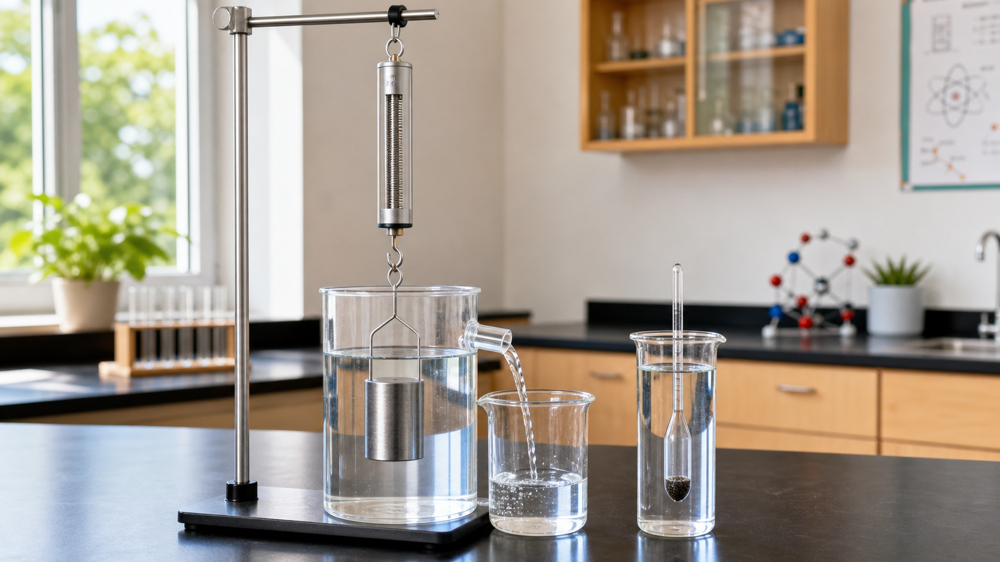

空心结构增大排水体积
排水量是满载时排开水的质量；漂浮时，它等于船和货物的总质量。

下册 · 第十章 · 浮力
从称重法感受浮力，用阿基米德原理验证浮力，再比较浮力和重力判断上浮、悬浮、下沉或漂浮。
知识桥梁
液体上下表面的压强差产生浮力；物体与液体的平均密度关系帮助判断浮沉。
第 1 节
浸在液体或气体中的物体受到竖直向上的浮力；称重法把“托力”转化成可测量的示数差。
“浸在液体中”既包括部分浸入，也包括完全浸没；正在下沉的物体同样受到浮力。
模型取水的密度 1.0×10³ kg/m³、物体高度 0.1 m、表面积 0.01 m²。继续加深时两侧压力都增大，但压力差保持不变。
第 2 节
F浮 = G排 = ρ液gV排。实验必须等溢流停止并稳定读数，才能正确比较。
V排是物体排开液体的体积，部分浸入时小于物体体积，完全浸没时才等于物体体积。
实验开始前，应先让液面达到溢水口并等待停止滴水；再缓慢浸入物体，最后读取稳定示数。
换算：300 cm³ 水的质量为 0.30 kg，G排 = 0.30 × 10 = 3.0 N。
第 3 节
完全浸没后松手，ρ物 与 ρ液 的关系决定物体先上浮、悬浮还是下沉；达到最终平衡后还要重新分析受力。
四种状态
ρ物 < ρ液，物体先上浮；漂浮时约有 80% 体积浸入液体。
排水量是满载时排开水的质量；漂浮时，它等于船和货物的总质量。
水舱进水使重力增大而下潜，排水使重力减小而上浮。
内部气体的平均密度小于空气，且空气浮力大于总重力时可以升空。
密度计始终漂浮，浮力不变；液体越密，所需 V排 越小。
第 4 节 · 跨学科实践
密度计漂浮时 F浮 = G，因此 V排 = m / ρ液。质量决定排开体积，细标度杆把很小的体积变化放大成容易观察的液面高度变化。
密度越小，密度计需要排开更多液体，因此下沉更深；读数前要等待它停止晃动。
密度接近 0.87 g/cm³；较细的标度杆能把密度差异显示得更明显。
第十章检查
完成 8 题，检查浮力方向、压力差、计算、浮沉与密度计设计。